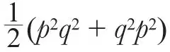

英文
英文佩尔斯
编者按
鲁道夫·佩尔斯在本文中反驳了乔治·坦普尔最近的一个观点，当时坦普尔显然已经证明了量子力学中存在一个矛盾。坦普尔认为应该有唯一的量子力学算符（量子理论的数学表示）对应于每个经典的运动变量，如位置和动量。佩尔斯对坦普尔的这个结论表示质疑，他指出在量子理论中变量在数学表达式里的次序是很重要的，而在经典理论中是无关紧要的。事实上，海森堡测不准原理就是源于这种所谓的算符的不对易性。 英文
最近，坦普尔教授[1]、弗勒利希博士和古思博士[2]都讨论了量子力学的逻辑一致性问题。坦普尔从他所陈述的量子理论的基本原理出发得出了一个明显的矛盾。这些矛盾的结果正是坦普尔从量子力学的基本原理出发通过严密精确的推导得到的。（弗勒利希博士和古思博士似乎并没有注意到坦普尔已做的相关推导。） 英文
坦普尔的主要假设是：经典运动变量（如动量、坐标等）的每一个函数都有一个明确定义的算符与之相对应，这些算符可以被视为相应的函数在量子力学中的表示形式。虽然我们可以经常在讨论量子理论基本原理的文章中，甚至是相关的教科书中看到这个假设，但是，我想强调的是，从坦普尔的论证过程中可以看到，在量子力学中，这个假设并不必要，甚至是不合理的。 英文
量子力学需要算符作为物理变量的表示形式有两个目的：一是将波函数与已经实现或可能实现的实验联系起来；二是计算波函数随时间的变化关系。为了能将量子力学明确地应用到实际的问题中，我们必须知道：（a）任意给定装置所测量的量的对应算符，（b）任意给定的物理系统对应的能量算符。严格地说，（a）是（b）的特殊情况，因为如果测量装置与所考虑物体的相互作用能是已知的话，我们总可以对测量装置的性质进行分析。 英文
譬如说，我们有这样一台用来测量qp2q（p表示粒子的动量，q表示粒子的坐标）这个量的测量装置，另外一台测量装置是用于测量

的，虽然在经典力学的极限情况下，量子效应可以忽略不计，测量以上两个量的结果是一样的，但是以上两个测量装置本质上却是不一样的。 英文
在应用这类测量装置之前（为了论证方便，虽然这个测量装置可能并不存在，但我们仍假定它存在）我们必须确定，不管是在实验研究中还是在应用量子力学的工作机制中，哪个算符与它们相联系。换句话说，一个在经典极限情况下适于测量某个量的装置，如果改装并放到小尺度空间中进行测量，则可能不符合测量要求，因为这时候我们需要考虑量子效应了。 英文
我们在量子理论的日常应用中，并没在表达式中因子的次序上遇到问题，这是因为通常在实际情况中只会出现一些非常简单的算符。这些简单算符中最典型的是处在力场中电子的能量算符，p2/2m+V(q)（m表示电子的质量，V表示势能）。我们通常认为，不考虑量子修正的话，这个严格表达式中的函数是粒子的能量算符，并且该能量算符给出的系统能量与经典力学中的表达式是一致的。这个假设似乎顺理成章，但是单凭理论推导并不能证明这个假设是对的。我们只能说这个表达式是众多不同的表达形式中看似最合理的一个，而这些不同的表达形式一般在经典极限下是等价的，除非有如pV－Vp = (h/2πi) ∆V（h表示普朗克常数）的项存在时，它们才不一样。实验表明，关于表达式最合理的选择应与现实情况相对应，这时这些修正项便消失了。 英文
实际上，当我们考虑相对论和自旋修正的时候，这些量子效应的修正项的确出现了，这表明我们不能单纯地从理论推导的角度得出这些修正项不存在的结论。 英文
（沈乃澂 翻译；李军刚 审稿）